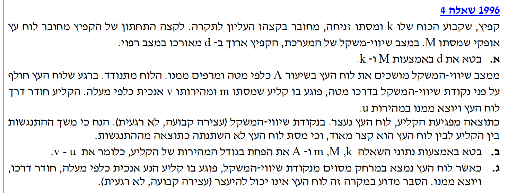
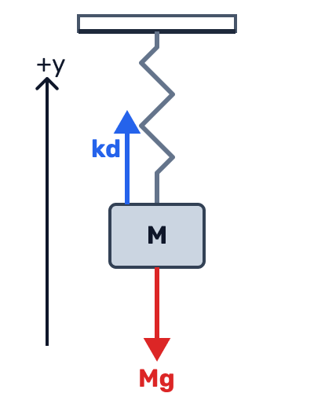

פתרון מודרך, צעד-אחר-צעד (ללא שימוש בקינמטיקה של תנועה הרמונית)
בשאלה זו אנו מנתחים מערכת המשלבת תנועה של גוף התלוי על קפיץ אנכי יחד עם התנגשות. השילוב דורש מאיתנו לדעת מתי ליישם את שיקולי האנרגיה המכנית (כולל אנרגיה אלסטית של הקפיץ ואנרגיית גובה), ומתי לעבור לשימוש בחוק שימור התנע בעת ההתנגשות הקצרה.
סדר העבודה שלנו יכלול: מציאת נקודת שיווי המשקל באמצעות ניתוח כוחות (החוק הראשון של ניוטון), חישוב המהירות לפני ההתנגשות בעזרת חוק שימור האנרגיה תוך בחירה חכמה של מישור הייחוס, וניתוח התוצאות לאחר ההתנגשות לפי חוק שימור התנע והחוק השני של ניוטון.
זכרו: שימוש נכון בחוק שימור האנרגיה המכנית מחייב הגדרה ברורה של מישור הייחוס ושל מצבי ההתחלה והסוף, כולל חישוב מדויק של התארכות הקפיץ בכל אחד מהמצבים.

נבחר ציר התייחסות אנכי \( y \) שכיוונו החיובי פונה כלפי מעלה. נשרטט תרשים כוחות (FBD) עבור לוח העץ במצב שיווי משקל בו מהירותו ותאוצתו מתאפסות לחלוטין.

על הלוח פועלים שני כוחות על ציר ה-\( y \): כוח הקפיץ כלפי מעלה (חיובי) השווה ל-\( kd \), וכוח הכבידה כלפי מטה (שלילי) השווה ל-\( Mg \). מכיוון שהמערכת במצב שיווי-משקל שקול הכוחות מתאפס.
מסקנה: \( d = \frac{Mg}{k} \)
כוחות לא משמרים (כמו התנגדות אוויר) אינם פועלים על המערכת לפני ההתנגשות, ולכן האנרגיה המכנית נשמרת. נגדיר את נקודת שיווי-המשקל כמישור הייחוס לגובה (\( h=0 \)).
נבחן שני מצבים במהלך התנועה של הלוח \( M \):
נשווה את האנרגיה המכנית הכוללת בשני המצבים (\( E_1 = E_2 \)):
נפתח את הסוגריים של האנרגיה האלסטית באגף שמאל:
נזכור את מסקנתנו מסעיף א' לפיה \( kd = Mg \). לפיכך, המכפלה \( kdA \) שווה בדיוק ל-\( MgA \). נציב זאת ונצמצם את האיבר \( \frac{1}{2}kd^2 \) משני האגפים:
האיברים של אנרגיית הכובד מתבטלים לחלוטין! נשארנו עם משוואה פשוטה המקשרת בין האנרגיה האלסטית הנוספת לאנרגיה הקינטית המקסימלית:
מכיוון שמשך ההתנגשות "קצר מאוד", כוחות חיצוניים (כמו כוח הכבידה וכוח הקפיץ) אינם מספיקים להפעיל מתקף משמעותי, וניתן להניח שחל שימור תנע בציר האנכי בין הרגע שלפני הפגיעה לרגע שאחריה.
לפי בחירת הצירים שלנו (חיובי למעלה), מהירות הלוח לפני הפגיעה היא שלילית \( V_{Mi} = -A\sqrt{\frac{k}{M}} \). מנגד, מהירות הקליע לפני הפגיעה היא חיובית \( v \). לאחר הפגיעה מהירות הלוח היא אפס (\( V_{Mf}=0 \)) ומהירות הקליע היא \( u \). נציב במשוואת שימור התנע:
כדי לפשט, נכניס את \( M \) אל תוך השורש, ואז נעביר את מהירויות הקליע לאותו אגף:
מסקנה: \( v - u = \frac{A\sqrt{Mk}}{m} \)
כדי להגדיר מצב של "עצירה קבועה" (מנוחה מוחלטת שלא משתנה עם הזמן), חייבים להתקיים שני תנאים במקביל: גם מהירות הגוף צריכה להתאפס (\( v = 0 \)), וגם תאוצתו צריכה להתאפס (\( a = 0 \)).
על פי החוק השני של ניוטון, התאוצה מתאפסת אך ורק אם שקול הכוחות הפועל על הגוף מתאפס (\( \Sigma\vec{F} = 0 \)). נבדוק מהו שקול הכוחות כאשר הלוח נעצר רגעית במרחק \( x \) מעל נקודת שיווי המשקל.
במיקום זה התארכות הקפיץ היא כעת \( \Delta l = d - x \). נרשום את סכום הכוחות הפועלים על הלוח באותו הרגע (כוח הקפיץ כלפי מעלה וכוח הכבידה כלפי מטה):
על פי מה שהוכחנו בסעיף א', אנו יודעים כי במצב מנוחה התחלתי התקיים \( kd = Mg \). נציב זאת כדי לפשט את המשוואה:
מאחר שנתון במפורש שהלוח נמצא מחוץ לנקודת שיווי-המשקל (\( x \neq 0 \)), מובטח לנו ששקול הכוחות שונה מאפס (\( \Sigma F \neq 0 \)).